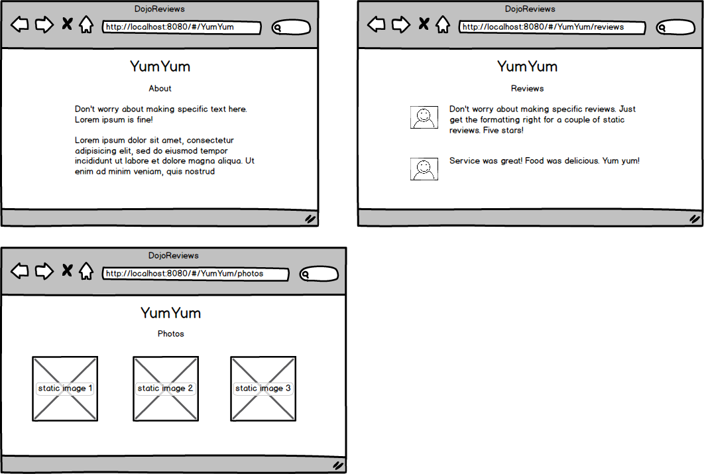

Assignment: Nested Routing
Objectives:
- Practice nesting components and routes
Adding to your previous assignment, add nested routing to the specific restaurant route. If we visit just the restaurant page, display a general description. (Again, for this assignment, keep the content body, including images, static (hard-coded) for now.)

- Create 3 additional components: About, Reviews, and Photos
- Add the functionality so that the appropriate component shows for the following routes:
- /<<any restaurant name here>> - About component
- /<<any restaurant name here>>/reviews - Reviews component
- /<<any restaurant name here>>/photos - Photos component